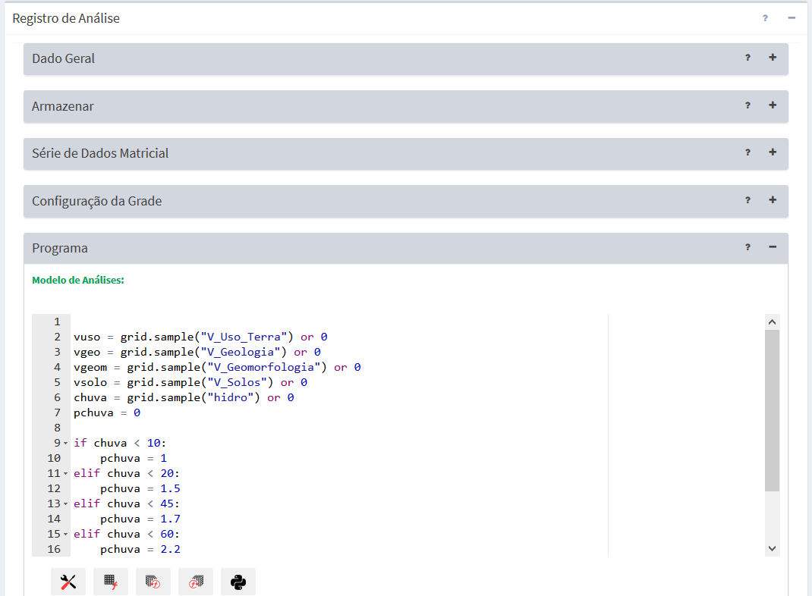
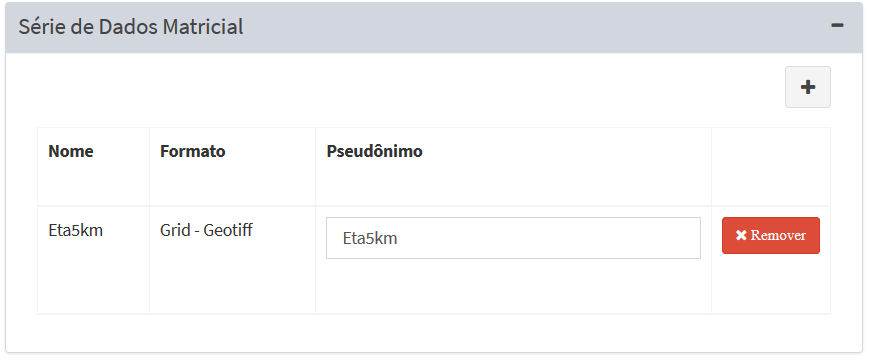

Grade
Em geral, análises baseadas em grade são comparadas as técnicas de inferência espacial realizadas em SIG como cruzamentos de mapas por regras booleanas, ponderadas, entre outras. A diferença desses cruzamentos feitos num SIG tradicional (eminentemente estático) e a plataforma TerraMA2 é que neste último pelo menos um dos mapas pode ser um dado ambiental coletado dinamicamente na forma de matrizes (grades retangulares). As grades estáticas como dados adicionais também podem ser utilizadas. A saída será uma nova matriz criada na mesma frequência dos dados dinâmicos ou com programação definida pelo usuário.
EDITANDO ANÁLISE BASEADAS EM GRADES
A Figura 3.28 mostra a área de trabalho utilizada para se definir uma análise baseada em dados matriciais (grades). Nesta interface deve-se definir um nome único para este tipo de análise, onde será armazenado a grade de saída, quais as grades de entrada serão utilizadas, a programação para execução de análises, configuração da grade de saída e do modelo de análise escrito em Python. Descrevemos a seguir cada um dos campos dessa interface.

Figura 3.28– Análise com base em dados matriciais.
Registro de Análise – Dado Geral:
- Nome: Defina o nome da análise (campo obrigatório). O tamanho máximo do nome é de 100 caracteres. Não é permitido nomes duplicados.
- Tipo: Escolha o tipo “Grade”. As demais opções estão descritas nos itens associados - “Objeto Monitorado” , “PCD” e “Processamento Vetorial”. IMPORTANTE: Após salvar a análise o tipo não poderá ser alterado.
- Descrição: Campo não obrigatório para descrição da análise. O tamanho máximo do texto é de 250 caracteres.
- Serviço: Escolha o serviço de análise que estará associado a cada análise. Se necessário adicionar novos serviços de análise (local ou remoto) consulte Adicionar Serviço.
- Ativo: Botão ativo executará a análise de acordo com a programação (ver abaixo) definida para a análise. Se o botão estiver desmarcado a análise não será executada. Uma análise que não esteja ativa poderá ser executada apenas manualmente pelo botão “
 Executar” disponível na lista de análises da área de trabalho.
Executar” disponível na lista de análises da área de trabalho.
Registro de Análise – Armazenar:
Utilize os parâmetros desta seção para definir o local de armazenamento dos dados. No caso de uma análise baseada em grades, será solicitado um servidor do tipo arquivo previamente definido (um diretório) para armazenar os arquivos matriciais dinamicamente criados.
- Formato de saída: Para este tipo de análise apenas a opção “Matriz Geotiff” encontra-se disponível.
- Armazenar Dados: Escolha o servidor de arquivos (FILE) que irá armazenar as matrizes de saída.
- Máscara: Máscara do nome dos arquivos a serem armazenados. Essa máscara utiliza partes constantes para capturar prefixos utilizados nos nomes dos arquivos e sequências especiais para indicar ao sistema como interpretar informações de data e hora contidas nos nomes dos arquivos. Utilizar %YYYY para anos de 4 dígitos, %YY para anos de 2 dígitos, %MM para mês, %DD para dia, %hh para hora, %mm para minutos e %ss para segundos. Se desejar informar um subdiretório a partir do servidor de arquivos escolhido, forneça o nome do subdiretório na frente do nome da máscara. Note que ano, mês e dia as letras devem ser maiúsculas e para hora, minuto e segundo as letras devem ser minúsculas.
Exemplo: Arquivos a serem armazenados no subdiretório “risco_fogo” com prefixo risco, seguido da data e hora como “risco200805271030.tif”, a máscara a ser utilizada deve ser : “risco_fogo/risco%YYYY%MM%DD%hh%mm.tif”
- Fuso Horário: Fuso horário do dado dinâmico foi gerado. Esse parâmetro garante que as datas e horas dos dados coletados se mantenham consistentes com a base de dados. Dados em horário GMT devem utilizar o valor 0.
- Projeção (SRID): Valor numérico dos parâmetros de projeção e datum dos dados a serem armazenados. Obrigatório para análise tipo “Dados Matriciais”. Valores mais utilizados ver no anexo.
Registro de Análise – Agendamento
Nesta seção o usuário deve definir quando será executada a análise.
- Tipo: Escolha tipo “Manual”, “Agendamento”, “Reprocessamento de dados históricos”, ou “Automático”. Se “Manual” a execução da análise só será realizada se o usuário utilizar o botão “
 Executar” no item da lista de análises que desejar, ou ainda em “Salvar e executar” da análise aberta. Se “Agendamento” a execução da análise será por intervalos pré-definidos podendo também definir o tempo inicial. Se “Reprocessamento de dados históricos” a execução da análise será por intervalos pré-definidos podendo também definir o tempo inicial, porém em um período inicial e final no passado. Se “Automático” dependerá da chegada de qualquer dos dados dinâmicos que uma análise utilizar.
Executar” no item da lista de análises que desejar, ou ainda em “Salvar e executar” da análise aberta. Se “Agendamento” a execução da análise será por intervalos pré-definidos podendo também definir o tempo inicial. Se “Reprocessamento de dados históricos” a execução da análise será por intervalos pré-definidos podendo também definir o tempo inicial, porém em um período inicial e final no passado. Se “Automático” dependerá da chegada de qualquer dos dados dinâmicos que uma análise utilizar.
NOTA: Em todas opções do agendamento a grade de saída é criada de forma contínua a cada execução da análise, exceto em “Reprocessamento de dados históricos” que a cada execução da análise as grades serão atualizadas.
- Data Inicial
 (somente se Tipo for “Reprocessamento de dados históricos”): Clique no campo para escolher a data e hora que será utilizada para início do reprocessamento.
(somente se Tipo for “Reprocessamento de dados históricos”): Clique no campo para escolher a data e hora que será utilizada para início do reprocessamento. - Data Final
 (somente se Tipo for “Reprocessamento de dados históricos”): Clique no campo para escolher a data e hora que será utilizada para fim do reprocessamento.
(somente se Tipo for “Reprocessamento de dados históricos”): Clique no campo para escolher a data e hora que será utilizada para fim do reprocessamento. - Unidade de tempo: Escolha um item entre “Segundos, Minutos, Horas e Semanalmente”.
- Frequência (somente se Unidade de tempo for Segundos, Minutos, Horas): Digite um valor de um número inteiro.
- Tempo Inicial (somente se Unidade de tempo for Segundos, Minutos, Horas): Clique no campo para escolher o valor de hora, minuto e segundo que será utilizado como referência para executar a análise. Campo não obrigatório e caso não definido será a partir do momento em que a análise for salva.
- Agendamento (somente se Unidade de tempo for Semanalmente): escolha uma das opções entre “Domingo, Segunda-feira, Terça-feira, Quarta-feira, Quinta-Feira, Sexta-feira e Sábado”
- Hora (somente se Unidade de tempo for Semanalmente): clique no campo para escolher o valor de hora, minuto e segundo que será executada a coleta e armazenamento do dado dinâmico.
Registro de Análise – Série de Dados Matriciais
Nesta seção o usuário deve escolher qual ou quais dados estáticos (matriciais somente) ou dinâmicos (Matriz) serão cruzados (ou sobrepostos espacialmente) para gerar um novo dado matricial dinâmico.
- + : Clique no botão para selecionar um dado estático ou dinâmico na janela que será apresentada.
- ⮧ Dado Estático: Clique para abrir a lista de dados estáticos matriciais a escolher. Note que uma vez escolhido o mesmo será retirado dessa lista. A lista de dados escolhidos fica disponível na área de trabalho.
- ⮧ Dado Dinâmico: Clique para abrir a lista de dados dinâmicos matriciais a escolher. Note que uma vez escolhido o mesmo será retirado dessa lista. A lista de dados escolhidos fica disponível na área de trabalho.
Após a inclusão de um dado na lista, o campo de pseudônimo pode ser alterado. Use o botão “X Remover” para excluir um dado da lista (Figura 3.29).
- Pseudônimo: Ao escolher um dado estático ou dinâmico os conteúdos dos campos Nome e Pseudônimo são iguais. Clique no campo correspondente que deseja alterar. Os operadores nas regras de análise farão uso dos conteúdos apresentados nos pseudônimos.

Figura 3.29 – Módulo de Administração: Análise – Lista de Dados Adicionais
Registro de Análise – Configuração da Grade
Nesta seção o usuário deve definir o tamanho da área da matriz de saída, resolução e o interpolador para ajustes da resolução entre os dados de entrada e saída.
- Método de Interpolação: Escolha o método de interpolação, se “Vizinho mais próximo”, “Bi linear” ou “Bi cúbico”.
- Interpolação nula: Digite o valor desejado para valores nulos da matriz de saída.
- Área de Interesse: Escolha como será definida a área da matriz de saída, se “União”, a área de interesse corresponde a área da união de dois ou mais dados selecionados na série de dados matriciais. Se escolher as opções “Mesmo da série de dados” ou “Personalizada” vejam os parâmetros descritos abaixo.
- Série de Dados (somente se Área de interesse for “Mesmo da série de dados”): Escolha um dos dados matriciais selecionados para a análise utilizar como referência do tamanho da área para a grade de saída”.
- X min (somente se Área de interesse for “Personalizada”): Digite o valor mais a esquerda da área. Valor depende do sistema de projeção utilizado.
- Y min (somente se Área de interesse for “Personalizada”): Digite o valor mais abaixo da área. Valor depende do sistema de projeção utilizado.
- X max (somente se Área de interesse for “Personalizada”): Digite o valor mais a direita da área. Valor depende do sistema de projeção utilizado.
- Y max (somente se Área de interesse for “Personalizada”): Digite o valor ponto mais acima da área. Valor depende do sistema de projeção utilizado.
- Projeção SRID (somente para Filtrar for “Personalizada”): Valor numérico dos parâmetros de projeção e datum a ser utilizado pelo par de coordenadas acima. Valores mais utilizados ver no anexo A1.
- Resolução: Escolha o tamanho do pixel, se “Grade menor”, “Grade maior”, “Mesmo da série de dados” ou “Personalizada”.
- Série de Dados (Somente se Resolução for “Mesmo da série de dados”): Escolha um dos dados matriciais selecionados para a análise como referência do tamanho da área para a matriz de saída”.
- X: Y: (Somente se Resolução for “Personalizada”): Digite os valores do tamanho do pixel. Este deve ser determinado conforme a projeção SRID definida anteriormente, ou seja, em graus decimais se a projeção for em coordenadas geográficas, ou metros se a projeção SRID for em coordenadas planas (UTM, cônica, polar, etc.). Valores mais utilizados ver no anexo A1.
Registro de Análise – Programa
Nesta seção o usuário deve editar o programa de análise. A edição do programa utiliza a linguagem Python, assim siga rigorosamente a sintaxe do comando definidos para esta linguagem. Além dos comandos e funções de Python você pode utilizar os utilitários e os operadores criados especialmente para a plataforma TerraMA2.
Para facilitar a edição do programa, botões na parte inferior da janela permite escolher atalhos de alguns itens específicos. Ao escolher um item entre os botões disponíveis o conteúdo será incluído na posição em que estiver o cursor. Os atalhos disponíveis são:
- Atalho para os utilitários da plataforma, tais como “Get date” que recupera a data/hora de execução da análise, unidades de distância e unidades de tempo.
- Atalho para o operador “Amostra” que recupera os “pixels” da atual matriz dinâmica ou de uma matriz estática.
- Atalho para os operadores históricos que trabalham com dados dinâmicos matriciais de observação. Os operadores utilizam o dado atual e o passado disponível.
- Atalho para os operadores que trabalham com dados dinâmicos matriciais de previsão. Os operadores utilizam o dado atual e o futuro disponível.
- Atalho para algumas funções, operadores e comandos de Python.
Após editar o programa, poderá utilizar o botão “Validar” para identificar se há erros de sintaxe nos comandos, funções e operadores utilizados. O botão “Salvar e executar” grava as últimas alterações e executa a análise mesmo que esta esteja inativa. Se desejar apenas gravar as alterações clique na seta do botão e escolha “Salvar”. Para as análises que estiverem ativas as próximas execuções seguirão as regras definidas na seção “Agendamento”.